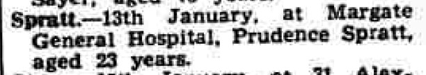
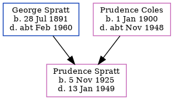

Prudence M Spratt 1925 - 1949
[ Home ] | [ Calendar ] | [ Surnames Index ] | [ Census Index ] | [ Family History ]The child of George Spratt (a road sweeper) and Prudence Coles, Prudence Spratt, the first cousin once-removed on the father's side of Nigel Horne, was born in Thanet, Kent, England on Nov 5, 19251,2,3,4. On Sep 29, 1939, she was living at 4 St John's Road, Margate, Kent, England1.
She died on Jan 13, 1949 at Margate General Hospital in Margate4,5.
Parents
- George Dale was born on Jul 28, 1891
- Prudence L was born on Jan 1, 1900
Citations
- 1939 Register - Findmypast (was the daughter of the head of the household)
- England & Wales births 1837-2006 - Findmypast
- England & Wales, Birth Index: 1916-2005 Online publication - Provo, UT, USA: The Generations Network, Inc., 2008.Original data - General Register Office. England and Wales Civil Registration Indexes. London, England: General Register Office. © Crown copyright. Published by permission of the Cont
- England & Wales, Death Index: 1984-2005 Online publication - Provo, UT, USA: The Generations Network, Inc., 2007.Original data - General Register Office. England and Wales Civil Registration Indexes. London, England: General Register Office. © Crown copyright. Published by permission of the Cont
- England & Wales deaths 1837-2007 - Findmypast
Media
Thanet Advertiser - 28 Jan 1949

1939 Register - TNA/R39/1755/1755D/014/27
England & Wales deaths 1837-2007 - BMD/D/1949/1/AZ/001128/103
England & Wales births 1837-2006 - BMD/B/1925/4/AZ/001160/027
Family Tree
Generated by ged2site. Last updated on Jun 11, 2024